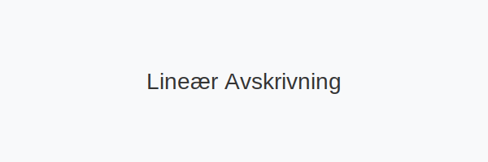

Lineær avskrivning er den mest brukte metoden for å fordele anskaffelseskostnaden jevnt over en eiendels økonomiske levetid. Denne artikkelen gir en dyptgående guide til hvordan du beregner, fører regnskap og vurderer skattemessige konsekvenser knyttet til lineær avskrivning.

Grunnleggende om Lineær Avskrivning
Ved lineær avskrivning fordeles samme beløp hvert år i eiendelens forventede brukstid. Metoden er enkel å implementere og gir forutsigbar kostnadsfordeling.
Fordeler:
- Enkel og oversiktlig beregning
- Forutsigbar kostnadsfordeling over perioden
- Enklere budsjettering og planlegging
Ulemper:
- Tar ikke hensyn til faktisk verdiforringelse over tid
- Mindre fleksibel ved eiendeler som taper mest verdi tidlig
Formel for Lineær Avskrivning
Årlig avskrivning = (Anskaffelseskost - Restverdi) ÷ Brukstid i år
For mer om avskrivningsmetoder generelt, se vår hovedartikkel om avskrivning.
Praktisk Eksempel
En maskin kjøpes for 500 000 kr, med forventet brukstid på 10 år og restverdi på 50 000 kr.
| År | Bokført verdi (start) | Årlig avskrivning | Bokført verdi (slutt) |
|---|---|---|---|
| 1 | 500 000 kr | 45 000 kr | 455 000 kr |
| 2 | 455 000 kr | 45 000 kr | 410 000 kr |
| 3 | 410 000 kr | 45 000 kr | 365 000 kr |
| … | … | … | … |
| 10 | 95 000 kr | 45 000 kr | 50 000 kr |
Regnskapsføring
Lineær avskrivning regnskapsføres vanligvis månedlig eller årlig:
Debet: Avskrivningskostnad (kostnadskonto)
Kredit: Akkumulerte avskrivninger (motkonto til anleggsmiddel)
Eksempel på månedlig postering for maskinen:
Debet: Avskrivningskostnad 3 750 kr
Kredit: Akkumulerte avskrivninger 3 750 kr
Skattemessige Aspekter
I norsk skattelovgivning benyttes hovedsakelig saldoavskrivning, men lineær avskrivning kan være relevant ved intern rapportering. For mer om saldogrupper, se vår artikkel om skattemessige avskrivninger.
Sammenligning av metoder
| Metode | Kostnadsfordeling | Skattemessig bruk |
|---|---|---|
| Lineær | Jevn over brukstid | Intern rapport eller IFRS-krav |
| Degressiv | Høyere tidlig | Følger faste satser i skatteloven |
Verktøy og Automatisering
Moderne regnskapssystemer kan automatisk beregne lineær avskrivning basert på forhåndsdefinerte parametere. Et godt anleggsmiddelregister hjelper med å holde oversikt over kostnader, avskrivningsplan og bokført verdi.
Konklusjon
Lineær avskrivning er en kostnadseffektiv og enkel metode som passer for eiendeler med jevn verdiforringelse. Ved å bruke denne metoden får du klarhet i kostnadsfordelingen, noe som gir bedre grunnlag for beslutninger om investeringer og skatterapportering.
For en mer detaljert presentasjon av avskrivning generelt, besøk Hva er Avskrivning?.